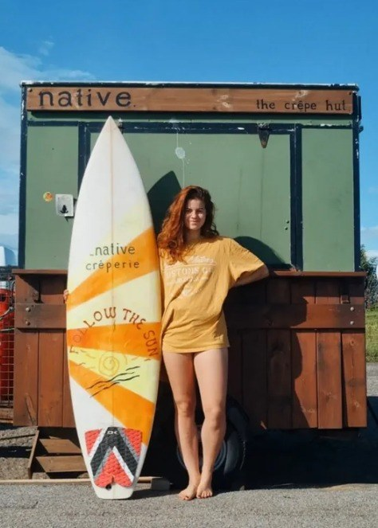
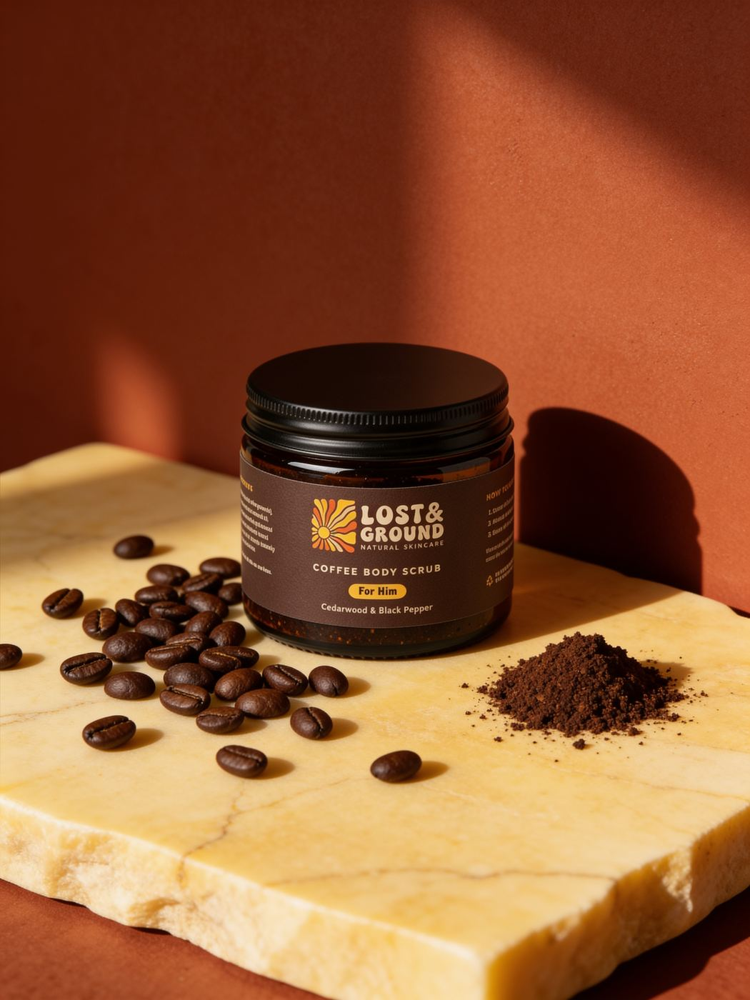
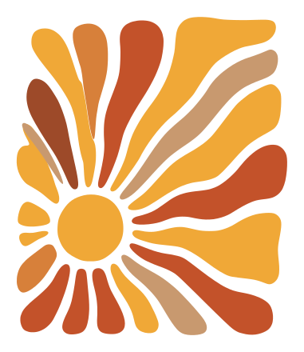

Our story
A small brand with a big idea: beauty that’s kind to your skin, your wallet and the planet.

Lost, then grounded
I built my first business from scratch: a small crêpe hut on the beach in Aberdeen.
Every day I saw how much coffee went in the bin, even from a tiny business like mine. If one little hut throws away that much, think about the whole country.
I didn’t want to just talk about it. I wanted to be the change I want to see. So I started Lost & Ground, to turn that waste into a body scrub that is good for your skin and kind to the planet.
Our mission
To be a force for good and cut waste in the beauty industry, one jar at a time.
Natural
Simple ingredients you can actually pronounce. Coffee, sugar, plant oils and nothing scary.
Ethical
Fair prices for you and a fair deal for the planet. Good skincare shouldn’t be a luxury.
Rebellious
We question how beauty is made, packed and sold. Less plastic, less waste, less fuss.
From your cup to your skin
Millions of tonnes of coffee grounds are thrown away every year. We give them a second life as a natural exfoliator, instead of the plastic microbeads still hiding in many scrubs.
Our grounds come from our partner ReviveEco. They have collected used coffee from local coffee shops in Glasgow and Edinburgh, and from one of the UK’s biggest coffee chains, which brings all its coffee waste to a few central places. Working with big coffee producers like this means every jar gets the same good quality coffee.




“Good products shouldn’t cost you a fortune, or the planet.”
Sarah, founder of Lost & Ground
A corner for the rebels
We are a small brand with a big wish: less waste in your bathroom. Every jar saves coffee from the bin and keeps plastic out of the sea. Thank you for being part of it.